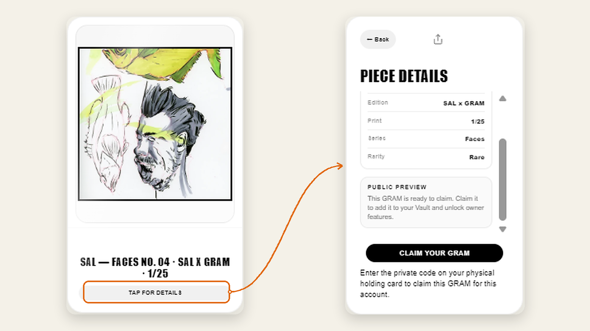
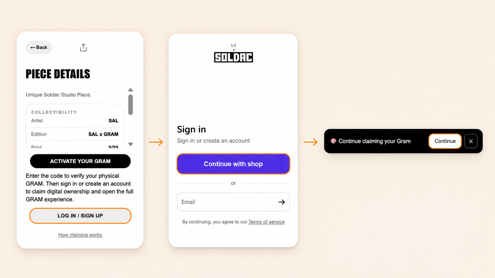
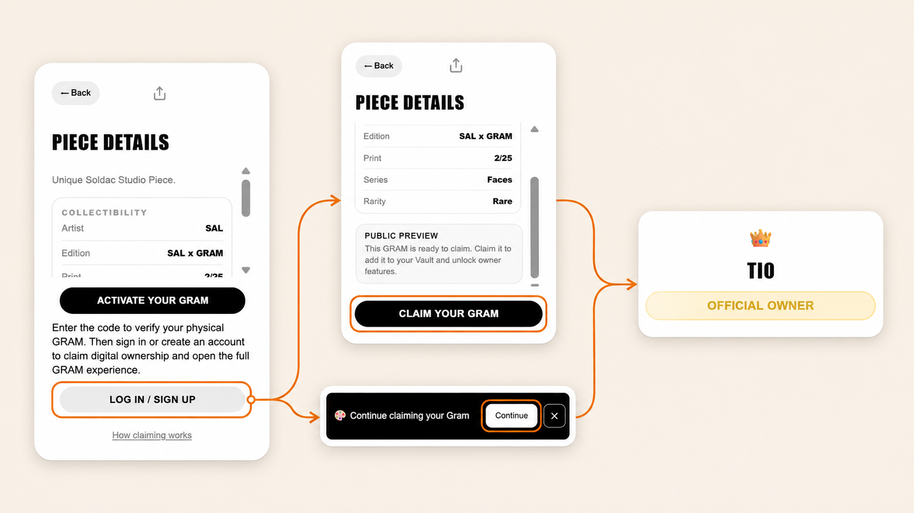
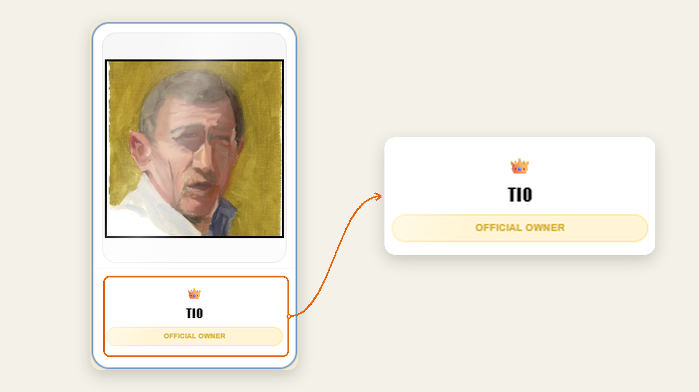
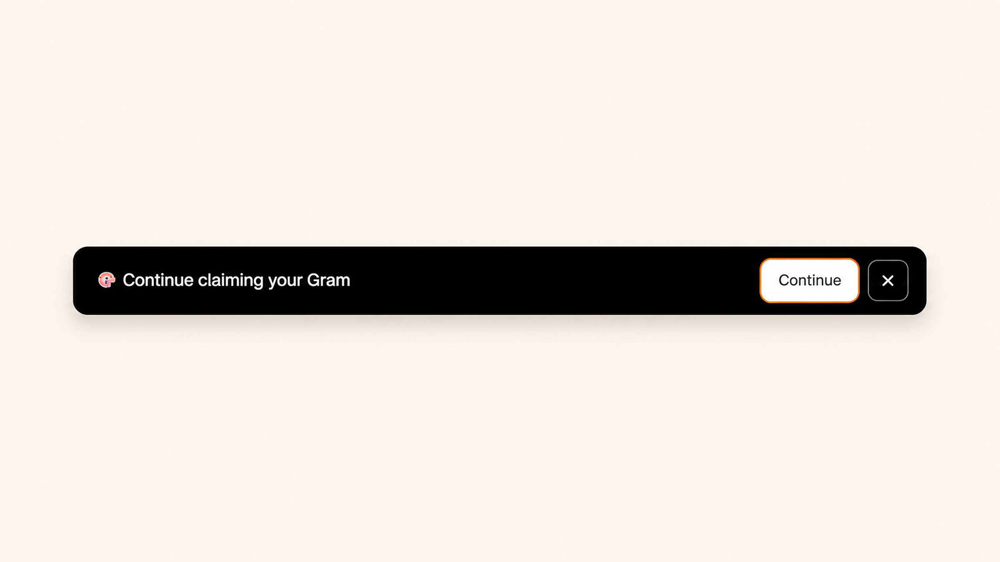

Claim y Propiedad
Cómo hacer claim de tu GRAM y confirmar que quedó vinculada a la cuenta correcta.
Qué significa hacer claim
Hacer claim vincula la GRAM a tu cuenta en la plataforma. Ese vínculo es la principal señal de propiedad digital.
Usa la cuenta correcta
Antes de hacer claim, confirma que has iniciado sesión con la cuenta que debe quedar como propietaria de la GRAM.
Cómo funciona
- Abre la experiencia de la GRAM.
- Inicia sesión, si hace falta.
- Completa el paso de claim que se muestra para esa pieza.
Antes de empezar
Usa la GRAM física: las fotos y capturas de pantalla no funcionan. Si el toque no abre la página, comprueba que NFC esté activo o escanea el QR.
Si no aparece el botón de claim
La GRAM puede ya estar reclamada o el estado de sesión puede no haber cargado. Confirma el inicio de sesión, actualiza una vez y vuelve a tocar la pieza.
Si el inicio de sesión te lleva a otra página
Vuelve a la página de inicio y busca “Continuar el claim de tu GRAM”. Si no aparece, vuelve a tocar la GRAM física.
Si el claim falla
Actualiza una vez, confirma tu sesión y vuelve a tocar la GRAM. No pulses “Claim” repetidamente; espera un momento antes de intentarlo otra vez.
Guía visual




